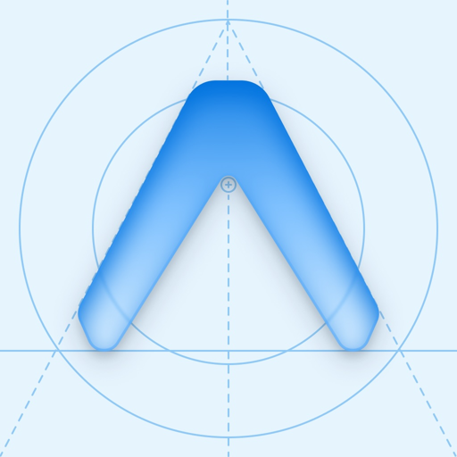

찐음치탈출
음치가 만든 음치탈출
이런 분을 위한 앱이에요
노래를 더 잘하고 싶은 분이 아니라, 내가 내는 소리가 맞는지 틀리는지조차 모르는 분을 위해 만들었어요. 보컬 트레이닝 앱이 너무 어려웠다면, 여기서 한 음부터 시작해요.
단음 연습
기준음을 듣고 따라 부르면, 내 목소리가 목표 음보다 높은지 낮은지 그래프로 바로 보여 줘요.
리듬게임
익숙한 동요·민요를 가사나 '라라라'로 따라 부르며 음정과 박자를 함께 연습해요. 내 음역대에 맞게 옥타브와 빠르기를 고를 수 있어요.
챌린지
음을 듣고 맞추기, 듣고 부르기, 음 이름을 보고 부르기로 실력을 확인해요.
마이크 소리는 기기 안에서 음정 계산에만 쓰이며, 녹음하거나 서버로 보내지 않습니다.
개인정보처리방침 · 문의: support@ableflow.co.kr